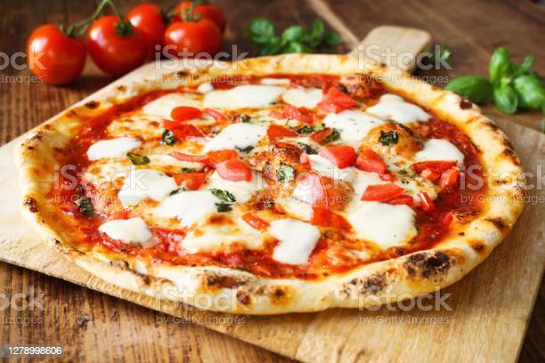

“Bloom” the yeast by sprinkling the sugar and yeast in the warm water. Let sit for 10 minutes, until bubbles form on the surface. In a large bowl, combine the flour and salt. Make a well in the middle and add the olive oil and bloomed yeast mixture. Using a spoon, mix until a shaggy dough begins to form. Once the flour is mostly hydrated, turn the dough out onto a clean work surface and knead for 10-15 minutes. The dough should be soft, smooth, and bouncy. Form the dough into a taut round. Grease a clean, large bowl with olive oil and place the dough inside, turning to coat with the oil. Cover with plastic wrap. Let rise for at least an hour, or up to 24 hours. Punch down the dough and turn it out onto a lightly floured work surface. Knead for another minute or so, then cut into 4 equal portions and shape into rounds. Lightly flour the dough, then cover with a kitchen towel and let rest for another 30 minutes to an hour while you prepare the sauce and any other ingredients. Preheat the oven as high as your oven will allow, between 450-500˚F (230-260˚C). Place a pizza stone, heavy baking sheet (turn upside down so the surface is flat), or cast iron skillet in the oven. Meanwhile, make the tomato sauce: Add the salt to the can of tomatoes and puree with an immersion blender, or transfer to a blender or food processor, and puree until smooth. Once the dough has rested, take a portion and start by poking the surface with your fingertips, until bubbles form and do not deflate. Then, stretch and press the dough into a thin round. Make it thinner than you think it should be, as it will slightly shrink and puff up during baking. Sprinkle semolina onto an upside down baking sheet and place the stretched crust onto it. Add the sauce and ingredients of your choice. Slide the pizza onto the preheated pizza stone or pan. Bake for 15 minutes, or until the crust and cheese are golden brown. Add any garnish of your preference. Nutrition Calories: 1691 Fat: 65 grams Carbs: 211 grams Fiber: 12 grams Sugars: 60 grams Protein: 65 grams Enjoy!
These cupcakes are easy to master and you will be making bakery-quality cupcakes in no time. In a medium bowl, whisk together dry ingredients: flour, baking powder, and salt. In a second bowl (or bowl of your stand mixer), beat together softened butter and sugar on medium-high speed 5 minutes until thick and fluffy. Beat in eggs 1 at a time, mixing to incorporate with each egg then blend in vanilla and scrape down the bowl. Reduce mixer to medium speed and add the flour in thirds, alternating with adding the 1/2 cup buttermilk and beating well between additions. Pour batter into 12 lined muffin tins, filling 2/3 full. Bake in the center of the oven at 350˚F for 20-23 minutes, or until a toothpick inserted into the center comes out clean. Let cool 5 minutes in the pan then remove cupcakes to a wire rack to cool completely.
Put 100g plain flour, 2 large eggs, 300ml milk, 1 tbsp sunflower or vegetable oil and a pinch of salt into a bowl or large jug, then whisk to a smooth batter. Set aside for 30 mins to rest if you have time, or start cooking straight away. Set a medium frying pan or crêpe pan over a medium heat and carefully wipe it with some oiled kitchen paper. When hot, cook your pancakes for 1 min on each side until golden, keeping them warm in a low oven as you go.Serve with lemon wedges and caster sugar, or your favourite filling. Once cold, you can layer the pancakes between baking parchment, then wrap in cling film and freeze for up to 2 months.